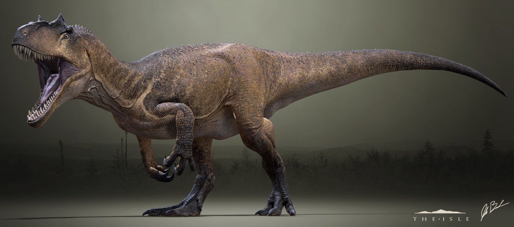
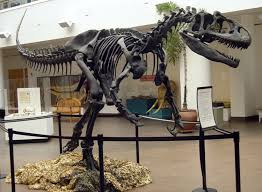
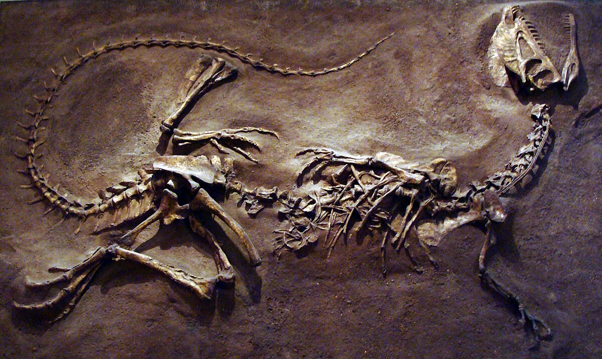
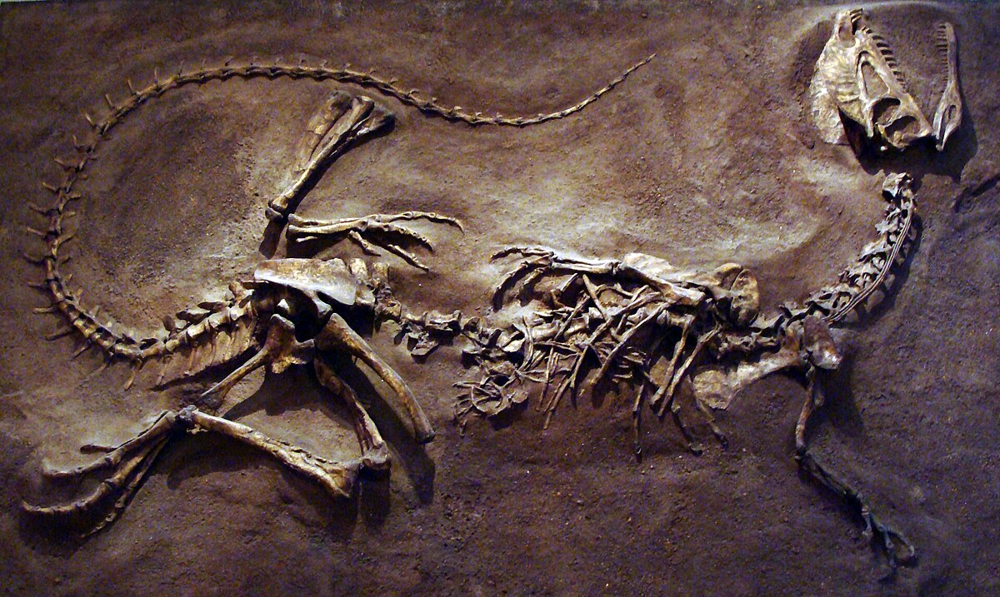

Allossauro


Nome: Allosaurus fragilis
Período: Jurássico Superior, aproximadamente 155-150 milhões de anos atrás
Localização: Principalmente encontrado na América do Norte
Tamanho: Cerca de 9 metros de comprimento e 2,1 metros de altura no quadril
Peso: Estimado entre 2 a 4 toneladas
Características distintivas:
1. Mandíbula poderosa com abertura de 90°
2. Braços robustos e garras fortes
3. Bípede
Comportamento: Acredita-se que fosse um predador ativo, caçando em bando outros dinossauros de médio porte, como o Stegosaurus e o Diplodocus. Sua agilidade, velocidade e força o tornavam um predador formidável.
Descobertas e Importância:É conhecido por uma abundância de fósseis encontrados na América do Norte, o que ajudou os cientistas a compreenderem melhor a ecologia dos dinossauros durante o Jurássico.
Sua relativa abundância em fósseis também o tornou um dos dinossauros mais estudados e reconhecíveis do seu período.
Apesar de sua fama, ainda há muito a aprender sobre o Allossauro, especialmente em relação ao seu comportamento social, reprodução e interações com o ambiente.
 
